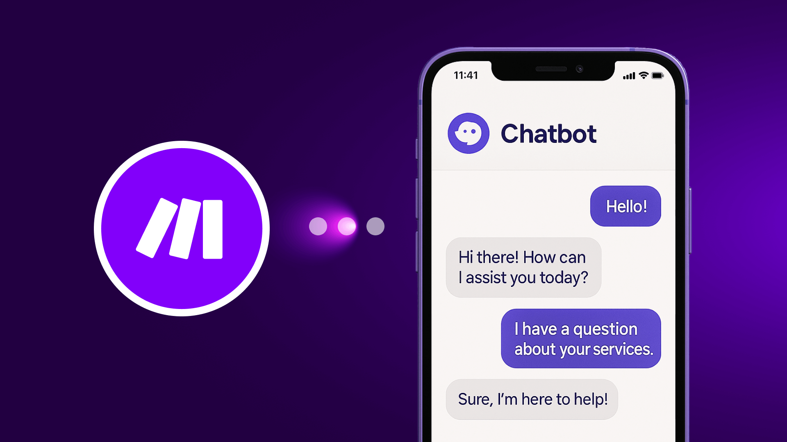
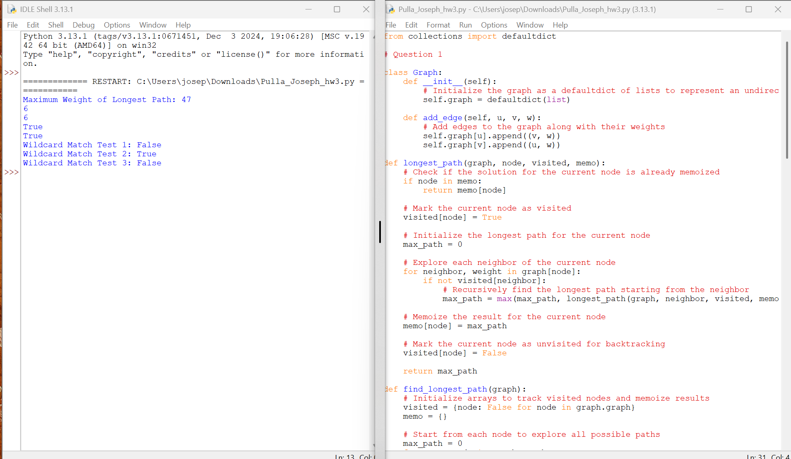
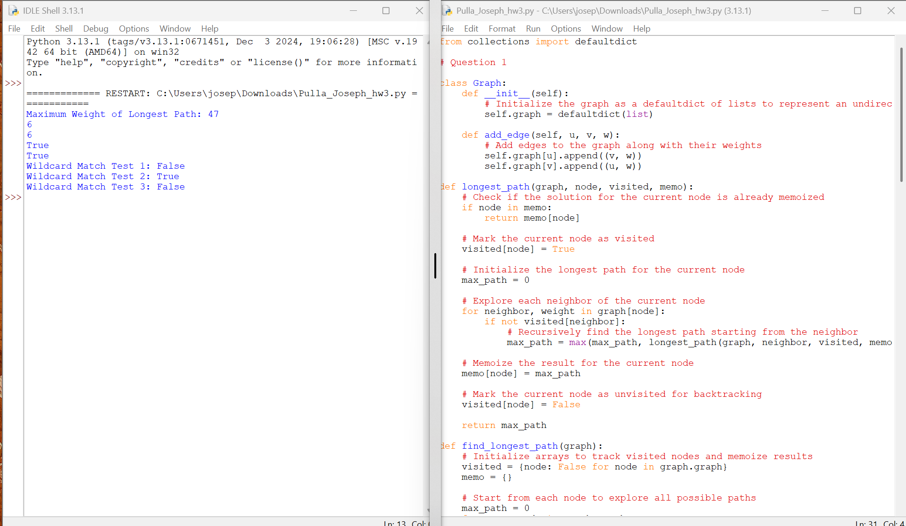
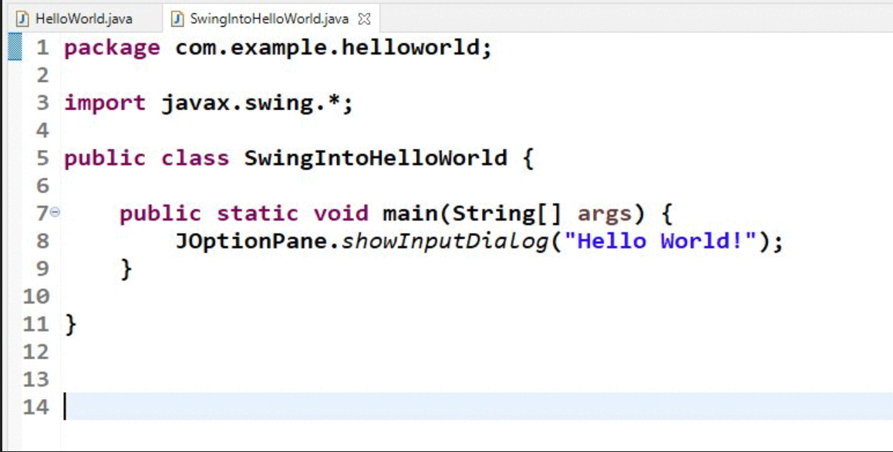
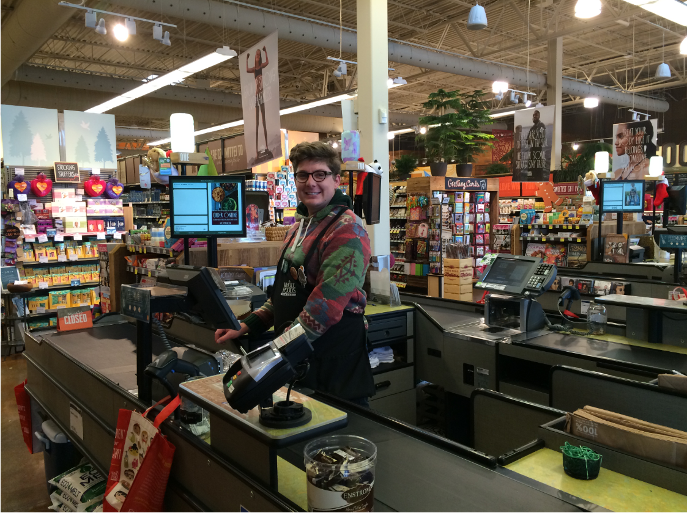

Home
My main goal is to get a really good job that is based on my major that I had taken on my college days, which is "Computer Inbformation Systems". The audience that I want to reach out to are the computer science experts because I wanna show them on how I am capable of doing amazing features when it comes to technology like creating chatbots and doing hard coding for video games or phone company's.

About
My goal is to build a strong career in the technology field, using the knowledge and experience I have gained through the Computer Information Systems (CIS) major. CIS is a discipline that blends computer technology, business understanding, and problem-solving. It grew out of the need for organizations to manage information, automate tasks, and use data to make smarter decisions.
Portfolio
Throughout my past college semesters, I had completed at least two computing projects that had help me strengthened my technical abilities and problem-solving skills. Each project allowed me to improve my understanding of language programming, system design, and gain hands-on experience with important tools and technologies.
Past computing projects:
- Creating AI Chatbots
- Coding on Python
- Designing websites

 

Skills
Skills for computer information systems:
- Programming Language
- Web designing
- Customer Associate
- Certificate A+
- Mathematics

